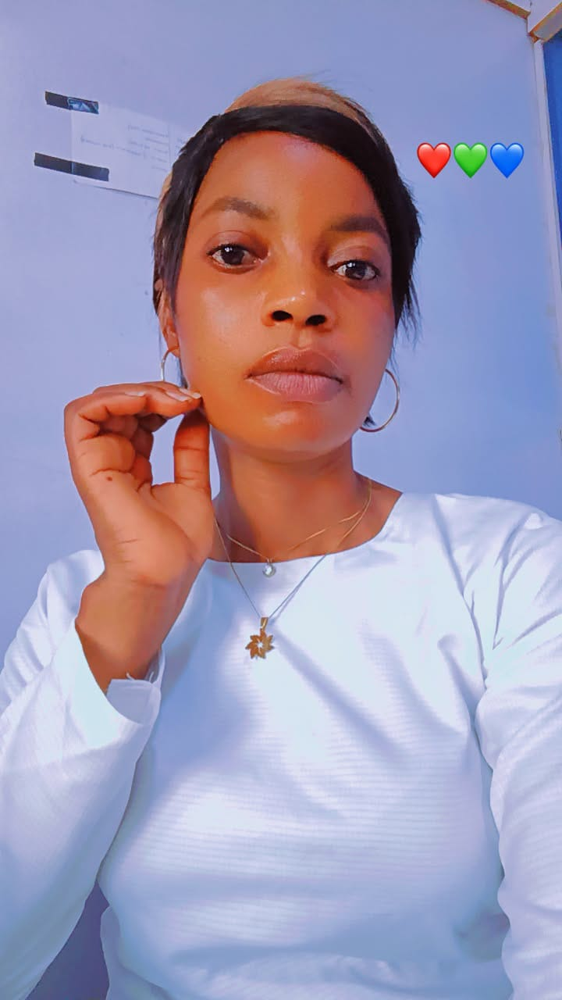
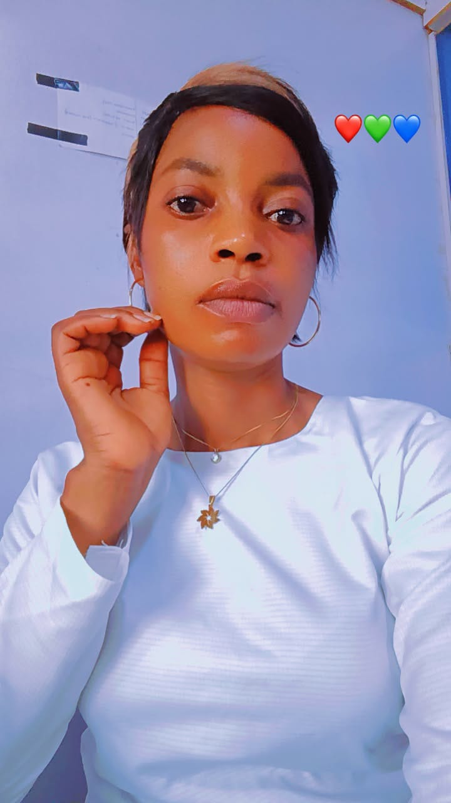

Home
Tunde Blessing, passionate about Web Development technology, Fashion Designer, photography.
Here you can learn about me, the services I offer, and how we can connect
About Me
My name is Blessing Tunde, I am a student of the federal University of lokoja, studying Computer Science. I am a passionate individual with a keen interest in technology and its applications. I have a strong foundation in programming languages such as HTML, CSS, JavaScript, and Python. In addition to my technical skills, I also have experience in sales and marketing, which has helped me develop strong communication and interpersonal skills.
In my free time, I enjoy reading books, traveling to new places, and cooking. I am also interested in fashion media and photography, which allows me to express my creativity in different ways. I believe that continuous learning is essential for personal and professional growth, and I am always looking for opportunities to expand my knowledge and skills.
Overall, I am a dedicated and motivated individual who is eager to make a positive impact in the world through technology and innovation.

 

Location: Edo state, Nigeria
Phone: +234 8068899024
Email:blessingtunde56@gmail.com
Facebook:Facebook
LinkedIn: LinkedIn
Twitter: Twitter
Instagram: Instagram
Services
1. Web Development: I can create responsive and user-friendly database websites using HTML, CSS, and JavaScript for my community to improve its security.
2. Photography: I can provide photography services for events, portraits, and product shoots.
3. Tailoring: I can offer tailoring services for custom clothing and alterations and also offer free training for littles girls after school

Career
As a seasoned Web development, photography and Fashion Designer, I bring 10 years of experience in Banking/Marketing. My background includes Bosak grassroot empowerment intiative, Fati fashion home, stanbic IBTC pension/sales and marketing, where I've develop expertise in Marketing.
I'm known for my personal strengths and have achieved notable achievements currently, I'm seeking to leverage my skills and experence to career goals.